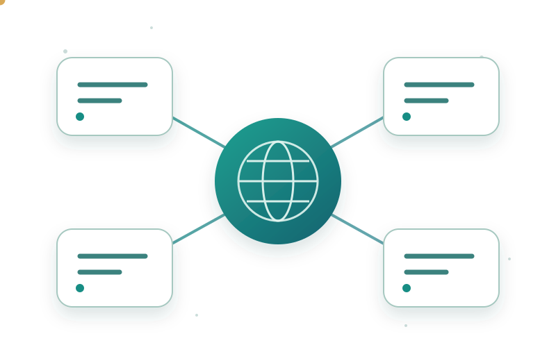
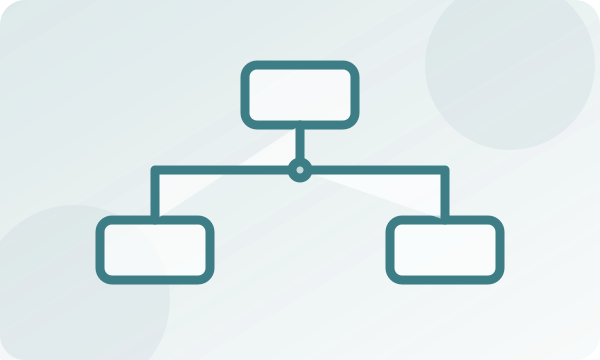
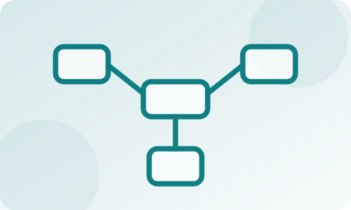

شرح يربط المفهوم بتطبيقه
تعرّف إلى لماذا وكيف تعمل الشبكة، مع المصطلحات العربية والإنجليزية خطوة بخطوة.
تسعة دروس منظّمة تشرح كيف تعمل الشبكات فعلًا: من الشبكات المحلية وعنونة IP إلى VLAN وTCP/IP واستكشاف الأخطاء. شروحات مبسّطة، رسومات أصلية، واختبارات تفاعلية.

ابدأ بمفاهيم LAN وOSI، ثم تعرّف إلى MAC وTCP/IP والعنونة، وانتقل إلى التوجيه وVLAN والتقنيات المتقدمة، واختتم بالتشخيص والأمن.
شاهد ترتيب الدروس التسعةالتعلّم هنا يجمع بين شرح يوضح سبب عمل الشبكات، ورسومات تساعدك على رؤية ما يحدث، واختبارات تكشف لك ما أتقنته.
تعرّف إلى لماذا وكيف تعمل الشبكة، مع المصطلحات العربية والإنجليزية خطوة بخطوة.

مخططات أصلية ترافق الدروس وتفصّل طريقة انتقال البيانات بين مكونات الشبكة.
اختبر فهمك، وراجع تفسير الإجابات، وتابع ما أنجزته عند العودة إلى حسابك.
في نهاية كل درس افتح الحقل التطبيقي، وابنِ شبكة مصغّرة ثم جرّب اتصالها. لا تحتاج إلى أجهزة حقيقية؛ المحاكاة تشرح لك نتيجة كل خطوة.
اختر درسًا وابدأ